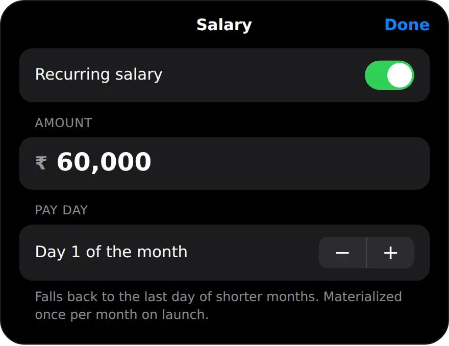

Why plan your budget on salary day?
Because every rupee you decide on before you spend is a rupee that cannot drift. Plans made at the end of the month only explain where the money went.
Most months follow the same pattern. Rent, EMIs and SIPs leave in the first week, then small payments carry on until the balance feels tight. A plan made on pay day turns that around: savings and fixed payments are set aside first, and what is left becomes the amount you can spend with a clear conscience.
How should I split my salary?
A common starting point is the 50/30/20 split: half for needs, 30% for wants and 20% for savings. Adjust it to your rent, your EMIs and your goals.
On a take-home of ₹60,000, that is ₹30,000 for needs such as rent, groceries, bills and EMIs, ₹18,000 for wants such as eating out, shopping and trips, and ₹12,000 for savings. In a city with high rent, needs may take 60% and wants shrink. Early in a career, you may push savings above 20%. The split is a starting point, not a rule.
One practical detail: an expense tracker cannot tell a need from a want, because a restaurant bill can be either. So it helps to judge the two together as your spending figure, ₹48,000 in this example, and keep savings separate.
How do I make a salary budget plan in MoneyOS?
Set your salary once, then use the Salary allocator on pay day and turn the result into a monthly limit. Five steps:
- Set your salary once. Open Manage, then Income & Growth, and tap Salary under Incoming. Turn on Recurring salary, type your take-home and choose your pay day.
- Open the Salary allocator. On Home, open Planning and tap Salary allocator. Your take-home is already filled in from your latest salary entry.
- Set your split. Start from 50% needs, 30% wants and 20% savings, then drag any slice to fit your month. The other two adjust so the total stays at 100%.
- Check EMIs and actuals. Read the EMI ceiling, then Recommended vs. actual, which compares your 6-month average spending and investing with the plan.
- Turn the plan into a limit. Open Manage, then Limits, and set a Total monthly limit that matches your needs and wants. Add category limits where you tend to overspend.
The Salary allocator is a planning screen. Changing the split there does not change anything in your ledger, so you can try ideas freely. Spending in Recommended vs. actual leaves out SIPs and other investments, which are compared under Investing instead.
With Recurring salary on, MoneyOS adds your salary as income once a month on your pay day, the next time you open the app. If your pay day is the 31st, shorter months use their last day. Each status in the allocator reads On track, Watch or Off track, so you can see at a glance which part of the plan needs attention.

The last step is what makes the plan stick. A monthly limit puts your spending figure on Home, with a nudge at 80% and 100%, and category limits keep the usual leaks in check. To turn the monthly figure into a number for each day, use the safe daily limit method.
How much of my salary can go to EMIs?
MoneyOS treats up to 35% of take-home as comfortable and 40% as the practical maximum, the range lenders in India usually look at.
On ₹60,000 that means up to ₹21,000 a month in EMIs is comfortable and ₹24,000 is the ceiling. The EMI ceiling card adds up every active loan you track, so a ₹12,500 car loan reads as 21% of income and On track. If you are close to the line, the time to know is before taking another loan, not after. Read how to track EMIs alongside daily expenses.
How big should my emergency fund be?
The Salary allocator sizes it at six months of expenses, based on your average monthly spending over the last six months.
With ₹44,500 of average spending, that is ₹2,67,000. If you started logging recently, the average still divides by six months, so the target starts low and grows as your history fills in. The same is true of the actuals in Recommended vs. actual. Tap Save emergency fund as goal to track it under Goals, then add to it from the savings part of your plan each pay day. Everything here is worked out on your iPhone, with no account and no bank login. Read what stays on your phone.
Frequently asked questions
What is a salary budget plan?
It is a decision, made when your salary arrives, about where each part of it goes: fixed payments, everyday spending, wants and savings. Making it before you spend means the month follows the plan instead of the other way round.
What is the 50/30/20 rule?
A common starting split for take-home pay: 50% for needs such as rent, groceries and bills, 30% for wants, and 20% for savings. On ₹60,000 that is ₹30,000, ₹18,000 and ₹12,000. It is a starting point you adjust, not a rule you must follow.
How much EMI is too much?
Lenders in India usually look at total EMIs against take-home pay. MoneyOS marks up to 35% as comfortable and up to 40% as the practical maximum, which is the range in which new loans tend to get harder to approve.
Does MoneyOS add my salary automatically?
Yes, once you turn on Recurring salary. It adds your salary as income once a month on your pay day, the next time you open the app. If your pay day is the 31st, shorter months use their last day.
Does the Salary allocator change my data?
No. It is a planning screen. Changing the split or the take-home there does not change anything in your ledger. Limits and goals only change when you set them.
Is MoneyOS free?
Yes. The whole app is free, with no subscription, no ads and no in-app purchases. There is no account and no bank login, and your salary figures stay on your iPhone.